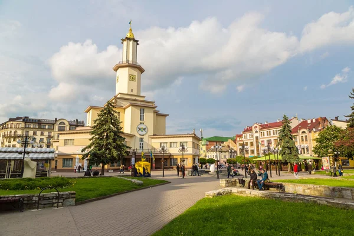
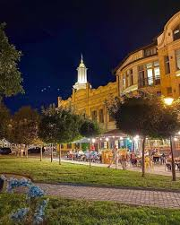
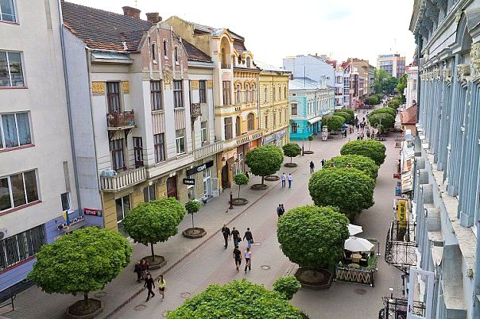
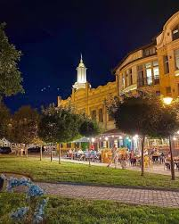
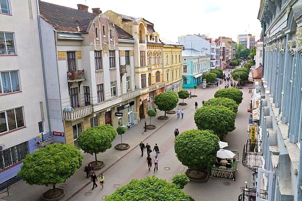

Івано-Франківськ
Місто, де від валів — кожна вуличка, мов карамелька.
Про нас
У цьому регіоні народились керівник опришківського руху Олекса Довбуш, письменники Іван Вагилевич, Василь Стефаник, Лесь Мартович, Марійка Підгірянка, художник Василь Касіян, скульптори Михайло Бринський та Григорій Крук, провідні діячі національно-визвольного руху Дмитро Вітовський та Степан Бандера. На території області знаходяться відомі всім Скелі Довбуша — скельно-печерний комплекс, унікальна пам’ятка історії та природи. Тут в різні періоди було і стародавнє святилище, і напівфольклорна фортеця княжої доби, і навіть твердиня опришківського руху.
Місця які можна відвідати в Івано-Франківську
 


